- General Principles
- Tools
- Frame Check
- Connecting via Terminal
- Connecting to a Pi via SSH
- First Layer
- Filament Jams
- Motor Direction
- Endstops/Filament Runout/Probes
- BLtouch / ABL Probes
- Pin debugging/Direct Pin control
- Z wall artefacts
General Principles
This page serves as a companion for this video: 3D printer troubleshooting - Free step by step help website
It aims to provide a methodology for identifying and solving common problems that occur with hobby 3D printers. If you find it helps you and you would like to say thank you, here is a donation link: PayPal.me
Special thanks to my Patrons for helping define the contents.
Watch the video, read this tab, prepare yourself with the appropriate tools and then work through relevant tabs.
Understand your machine before attempting modification
Perhaps you have arrived at this page with a standard printer that has broken down. In this case, ignore this heading. Many people, however, will arrive at this page after performing modifications to their machine. When they try to turn it back on, something doesn't work as expected.
Often people fall into the trap of modifying a 3D printer as a beginner, immediately after purchase. This can be quite risky. Firstly, they do not have a good working knowledge of how their printer functions. They have not seen it in action long enough to know what the purpose of each component is, which increases the chance of components being reinstalled incorrectly.
Another potential problem is that the user will not appreciate the benefits of the upgrade because they have not worked with the printer in its 'inferior' standard state. In some cases something like an ABL probe will be fitted immediately, before the user understands how to manually level the bed. The rush to upgrade deprives the user of learning the fundamentals necessary for efficient and effective long term operation. I am a fan of using ABL for the added convenience and the ability to compensate for a warped bed, but this is because I spent many years without ABL on a less than precise printer.
Be methodical: only test/change/modify one aspect at a time
Beginners often tear down a printer and upgrade multiple things at once, which means when it goes back together and doesn't work they have no idea which new component is the problem.
Therefore, it is smartest to upgrade one component at a time when the printer is working, or if it has broken down, test one aspect at a time. If we change two aspects and the problem goes away, which of the two changes was responsible? Maybe only one was needed and the additional, uneccessary change will cause problems down the line.
This guide works on the methodology of a scientific test, where only one variable is tested to ensure accurate results and conclusions are forthcoming.
When asking for help, be specific
If all else fails and you approach a community group for assistance, try to help them help you. Specify your printer, mainboard, stepper drivers, firmware, modifications, slicer, etc. Anything that is relevant to the situation. Tuning the current delivered to the stepper motors differs significantly depending on these variables.
Use free services like:
- Filebin to upload gcode files for others to examine and preview.
- Pastebin to provide firmware configuration information or other relevant data. Forums will often garble sensitive data like gcode or firmware configs that needs to be read accurately.
- Imgur to upload images of your problem. A picture paints a thousand words and is quite often the most efficient way to communicate a problem.
- Streamable to upload a video of the problem. This again can be incredibly useful in helping others diagnose your problem.
All of the sites above are free to use and do not require an account for the core functionality.
Use the search feature
On the internet, with something as popular as 3D printing, there is a fair chance someone has had your particular problem before. Sometimes everything feels overwhelming and you really want a human to advise you but you should always start by searching. This can be in community groups or the GitHub issue section (eg. Marlin) for your hardware or firmware. People understandably get annoyed if you don't undertake this basic step. Why should you expect them to invest time in helping you when you can't even be bothered to type a few words in a search box?
Be patient and appreciative
Unless you are accessing paid technical support, everyone involved is assisting for free in their spare time. It may take them a long time to get back to you if at all. Even paid technical support may not have quick answers. Their efficacy depends a lot on your ability to accurately convey the problem.
Pay it forward
Once you do find the solution to your problem, make it public so it may benefit future searchers. If using a community group message board, mark the issue as solved, post the solution and thank those who helped you. In time, as you become more experienced and confident, consider helping the beginners who are in the same situation you were in when you started out.
Tools
I have a video on useful tools for 3D printing: Essential (and obscure) 3D printing tools and spares
However, here we are focused on specific tools to collect information, because when troubleshooting a 3D printer: knowledge is power.
Calipers
Digital calipers are a cheap and easy to use tool for measuring various dimensions. This may include printed objects, probe offsets, and measuring the movement of the machine. A ruler is a useful backup but will not be as accurate as digital calipers. Calipers are also excellent for measuring objects when 3D modelling.
Multimeter
A digital multimeter is a versatile tool for measuring various electrical signals. On a 3D printer they are handy for measuring the VREF for tuning stepper motor current, measuring voltage to ensure components are turning on and off as expected, but perhaps most importantly, testing continuity to trace and find broken connections. Spending more means you will also gain the ability to measure temperature.
Multimeter with temperature reading on Amazon
Terminal/console software
This is perhaps the most important tool: the ability to connect directly to your 3D printer to read and send information. Options include:
- Pronterface - Free and available for Windows, Mac and Linux.
- Octoprint - Free host software that typically runs on a Raspberry Pi. Has a 'terminal' tab. Octoprint setup video guide
- Arduino IDE - Free and available for Windows, Mac and Linux. Less intuitive but the Tools > Serial Monitor option will provide a terminal.
- Simplify3D - Paid slicing software that also has a terminal feature.
- Chrome gcode Sender - I haven't used this yet but it was submitted via the issues by stdekart5827 and may be a good solution. Can send gcode directly from Chrome to your 3D printer. Chrome web store link.
There are many other options but these are the most popular. If you already have a favourite piece of terminal software, you don't really need this list.
Connecting to the printer is covered in the next tab.
Firmware Gcode References
Once you have a working connection, you need to know what to send. A great place to start is by having the gcode reference for your firmware handy:
GitHub Resources
Many manufacturers of 3D printers and upgrade parts provide GitHub repositories with detailed manuals, dimensions and wiring diagrams. Here are some popular examples:
Frame Check
Before going down the rabbit hole diagnosing problems, it is probably best to confirm they actually exist by making sure your 3D printer is in good condition.
The following is a guide to 3D printer maintenance that should serve you well:
Additionally, I have a list of items to check around the printer on the Frame tab of my Calibration page that should serve as a handy guide to work through.
This tab has a companion video:
Connecting via terminal
Typically, connecting to the printer with any of these software options involves using a USB cable, selecting a port and a baud rate.
USB cable
This one seems clear cut: just plug in the cable between the computer/Raspberry Pi and the mainboard. It is still worth mentioning that not all USB cables are created equal. If you are having trouble connecting, try another cable.
Port
On a Windows machine, after a driver is installed, the name of the port can be found in Device Manager:
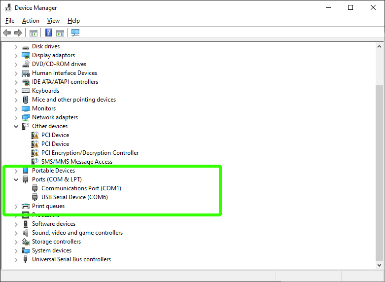As you can see, the name of the port will be COM followed by a number. In the example above: COM6.
On a Mac, Linux or with Octoprint on a Raspberry Pi, the name of the port will typically start with ttyUSB, followed by a number. For example /dev/ttyUSB0.
On any system, there may be more than one device listed, so trial and error may be required to find the right port.
Baud
Baud is the speed of the serial connection between the host device and mainboard. 99% of the time the baud should be either 115200 or 250000. This is set in the firmware but even if you don't access to the firmware source to check, just try one and if needed, the other.
Connecting
In Pronterface, select the port and baud in the top left and then click connect.
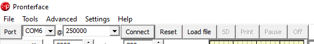If this is successful, you will receive a confirmation message in the terminal output. If not, try a different combination.
With Octoprint, we have the same options, but Octoprint will automatically cycle between them until it finds the right combination.
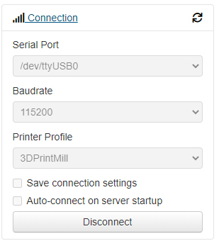What to send to get started
To test your serial connection, send M115 which will report on your firmware, including when it was compiled and uploaded.
Another useful command is M503, which will return all of the firmware variables currently in place. This output is worth copying and pasting in a document before performing major modifications. This list of variables also represents everything that can be changed and stored in the EEPROM without the need for firmware compilation.
If you still can't connect
Sometimes it just won't work. Some additional areas to check:
- Close Simplify3D/Cura/other 3D printing software - These may connect automaticlly to available machines, hogging the serial port and preventing your terminal software from connecting.
- Double check you serial port settings in the firmware - 8 bit mainboard generally had the same settings but 32 bit boards vary. Consult the documentation to ensure you have the right values in configuration.h. The examle below is from a Creality V4 32 bit mainboard:
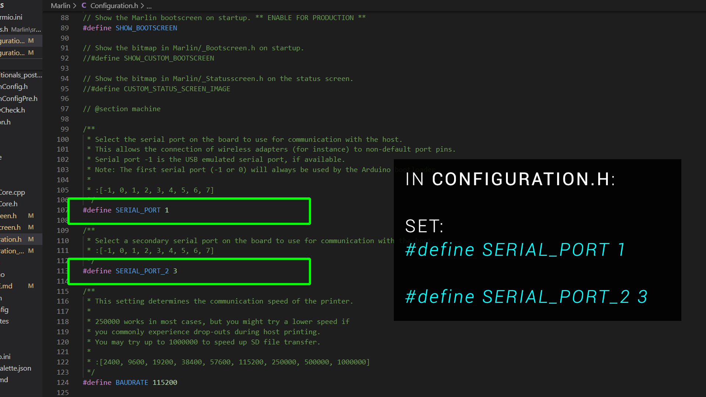 - Turn the printer on - Some mainboards will come to life solely from a 5V USB cable, where as others need the main power switch turned on.
This tab has a companion video:
Connecting via SSH to a Raspberry Pi
Connecting to a Pi from your PC is possible via Secure Shell (SSH). This is a protocol for communicating with the Pi remotely. This is needed because we typically run the Pi headless on our 3D printers (no attached GUI).
PuTTY
Windows has an in built SSH client but I can never get it to open. Therefore I use the free and open source software PuTTY .
IP address
To connect with PuTTY, we need the ip address of the Pi on our local network. If already being used in a working Octoprint or Klipper installation, this is simply the ip address you enter into the browser to access the web interface. Alternatively, you can log in to your WIFI router and retrieve a list of connected devices with their IP addresses. An example ip address is 192.168.1.5
Default username and password
The default username for the Pi should be pi and the default password raspberry .
It is recommended to change this after logging in with passwd .
Some useful commands:
ls
Lists the contents of the current directory.
cd ..
Move up a directory.
cd [name]
Move to the named directory. You can start to type and then press tab to auto complete the name.
sudo
Superuser do command. Added before other commands to give admin/root privileges. Your password will be required after using this.
sudo nano [filename]
Nano is an inbuilt text editor. sudo is needed to give file overwriting privileges. Be careful to enter the filename correctly. If you enter a typo, a blank file with that name will be created instead.
Copying and pasting in PuTTY
To copy in PuTTY, simply highlight text and it will be copied to the clipboard automatically. This is the equivalent of highlighting and inputing Control + C in Windows.
To paste in PuTTY, simply right click the mouse. This is the equivalent of inputing Control + V in Windows.
WinSCP
Another very useful piece of free software for Windows users is WinSCP .
The left panel shows a local Windows directory and the right a directory from the Raspberry Pi. Both can be navigated using the graphical interface and files and folders can be moved and copied between the two.
First layer problems
In my experience, the number one problem new 3D printer users will have is getting the bed levelled correctly and therefore an adequate first layer on a 3D print.
- If the nozzle is the correct distance from the bed, the extruded plastic will squish into the surface of the bed, gaining a good grip that will keep the printed object secure until printing is complete.
- If the nozzle is too close to the bed, the filament will be squished too much into the bed. This could damage some more delicate bed surfaces. It can also have the effect of blocking the exit of the nozzle and leading to a jam.
- If the nozzle is too far from the bed, the first layer effectively prints in mid air, with the filament not squishing into the bed surface and therefore not adhering properly. Such a print will likely be dislodged sooner rather than later.
- If the bed is not levelled correctly, you may have a combination of the above across different parts of the bed.
- If the bed is warped, it may be impossible to achieve the correct distance between the nozzle and bed across the whole bed surface.
First Layer Calibration
I have already created a First Layer Calibration page to address this need. It features a companion video:
It also features a gcode generator to created a first layer test print to suit your 3D printer.
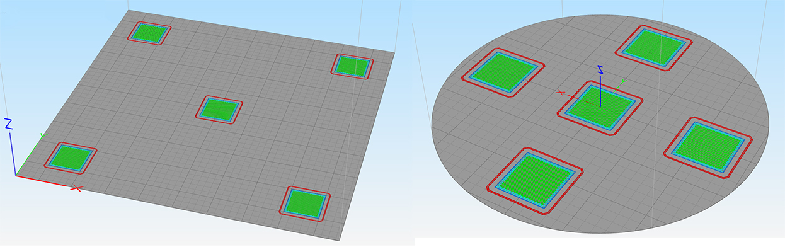Finally, there are reference diagrams to help you deterine your results.
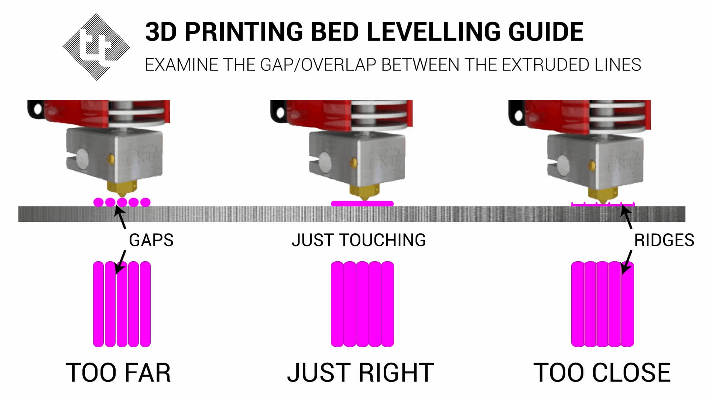Other Factors
Apart from the levelling and physical distance between the nozzle and bed surface, there are a few other factors you can investigate if you are still having trouble with your first layer:
- Slow it down - The first layer really benefits from a much slower feedrate to help the filament stick. Most slicers have a speed setting just for layer one, so you can ensure good adhesion without slowing down the subsequent layers.
- Bed temperature - The bed temperature and nozzle temperature should match those stipulated by the filament manufacturer. If you attempt to print ABS with a heated bed temperature usually used for PLA (eg. 60 degrees C), the filament will probably look fine for the first layer but soon after will likely detach. It is also worth noting that some surfaces like Wham Bam PEX might need 10 degrees C hotter bed temperature over regular PEI to gain max adhesion (eg. 70 degrees for PLA instad of 60 degrees).
- Dirty bed - Dust, debris and greasy fingerprints will inhibit the adhesion between bed and filament. Most bed surfaces benefit from cleaning using Isopropyl alcohol and paper towel every few prints. Please check if IPA is safe for your bed to avoid damaging the surface.
- Adhesion aids - Substances like glue stick, hairspray or even purpose made products like Dimifix may be used to increase adhesion. Again, read the instructions carefully and ensure the product will not damage your bed surface.
- Environmental factors - A draft blowing over the printer from an open window might affect print adhesion. Ensuring a controlled environment will help 3D print quality overall. This may be as simple as closing doors and windows or providing a simple enclosure.
Filament Jams
When everything is working perfectly, the filament will be pushed through the heater block, melted and then exit the nozzle to be deposited as part of the printed object. It is possible, however, for the filament to jam somewhere in the system and cause the print to fail. The following is a list of areas to check if your 3D printer is jamming.
Hot end temperature
Thermoplastics require a certain temperature to melt and flow freely. Generally, the hotter the nozzle, the lower the viscosity of the filament and the more freely it flows. Upping the hot end temperature by 5 to 10 degrees is a viable method to try and stop filament jamming. If the nozzle temperature is too high, it may make the filament too 'oozy' which negatively impacts aspects like retraction. The faster you print, the higher the nozzle temperature will need to be allow the filament to melt and flow in time.
First layer squish
As mentioned in the previous tab, if the nozzle is too close to the bed for the first layer, the bed blocks the exit of the nozzle which can jam the filament. Quite often you will notice the extruder stepper motor 'clicking'/missing steps only on the first layer. A first layer with too much squish is illustrated in the previous tab. If you experience jams primarily at the start of prints, try increasing the distance between the nozzle and bed for the first layer.
'Baked' filament from sitting in an idle hot nozzle
Try to avoid leaving your nozzle at printing temperatures when the printer is idle. This can be easy to do, perhaps you heat up the nozzle for a filament swap and then get distracted. Over time, the filament in the nozzle can degrade, harden and then block the tip. This will likely require removal and cleaning.
PTFE tube not correctly seated
Hot ends can either be lined or 'all metal'. In a lined hot end, the PTFE tube runs through the heat break and either into the inside of the nozzle or is jammed hard against the back/top of it. This design is popular on Creality and other budget machines.
If there are any gaps in the system between the PTFE tube and the metal components, filament is free to expand into the wider cavity and prevent the filament from moving through the whole system. This is illustrated in the diagram below with the resulting filament bulge which causes the jam:
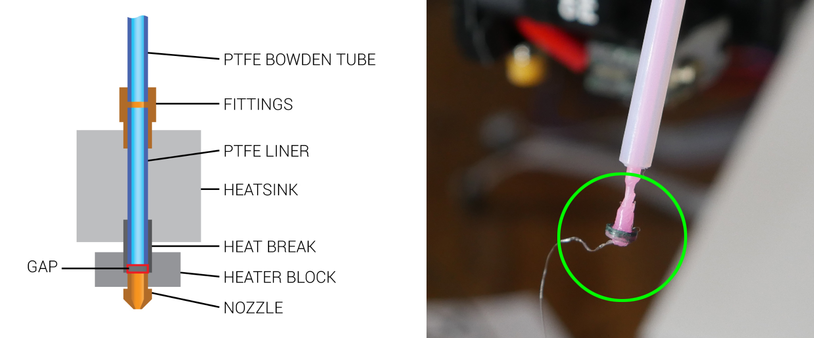To stop this problem, it is essential to have a good quality tube fitting that wll hold the PTFE tube firmly in place. As these fittings can degrade over time, Luke Hatfield has developed a simple but effective fix to modify Creality lined hot ends so the tube remains seated. CHEP has made a great video on testing this solution:
Stripped filament in hobbed gear
This problem is illustrated below:
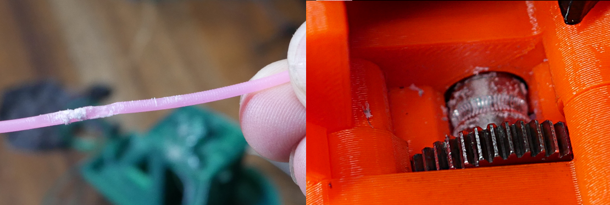The hobbed gear has tiny teeth to grab the filament and push it through the hot end. This problem often comes from an obstruction further along the system - a blockage in the nozzle for instance. The filament has no where to go, the hobbed gear cuts a trench in the filament and the debris clog the hobbed gear(s). Quite often this problem must be checked and cleared after solving a jam elsewhere. After disassembly to gain access, a spare toothbrush is an excellent tool for cleaning the hobbed gear(s).
Heat creep
Heat creep is when areas of the printer that are meant to stay cool slowly heat up to problematic temperatures. It is vital that only a specific section of the hot end assembly remains hot enough to fully melt the filament. To achieve this, a heat sink is typically fitted above a heat break that is actively cooled by a fan. This prevents the filament path above the melt zone from heating up and softening or melting the filament prematurely. This is illustrated well by Slice Engineering on their Copperhead hot end page, where we can see the heater block is hot but everything above it is cool:
If the heat sink cooling fan is starting to degrade, heat creep may soften the filament and cause a jam. As it is hard to diagnose a faulty fan, it may be easier to swap it to a good unit for peace of mind.
Some printers like the Monoprice Mini Delta have weak heat sink cooling systems from factory. I have found with this particular printer, I have to print 5-10 degrees below what I normally use to prevent heat creep and jams.
Changing to a quiter heat sink fan can be risky, as they typically produce less air flow and therefore less heat sink cooling. Despite this, I have successfully run a 40x10mm Noctua fan on my Ender 3 hot end for years now. I have ever had a jam, but it is worth noting that I've also had Hero Me upgraded fan shrouds, that direct the air directly onto the heat sink compared to the standard Ender 3 hot end metal box/cover which simply blows in the general direction.
Finally, it is possible for heat creep to affect a bowden tube design printer. If the extruder stepper motor gets too hot, the heat may creep up and cause the hobbed gear to also get hot. This will soften the filament and possibly lead to stripped filament as illustrated previously.
Heat creep jams normally occur a set amount of time into the print. If you notice that the printer jams approximately the same amount of time into the print regardless of the object, this may be the amount of time it takes the heat to creep up and saturate the system.
Filament path obstruction/tangle
This one can be easy to overlook. In the case of a clear tangle of the filament on the spool, the cause of the jam will be obvious:
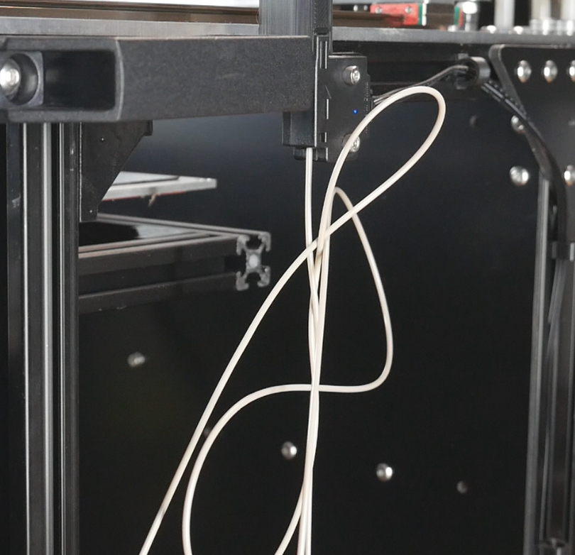It is also worth checking the filament can pull freely from the spool if you have some sort of guide system like a reverse bowden tube. Also check the filament spool can rotate freely.
Physical obstruction in nozzle
After printing a higher temperature filament, it is important to ensure that the old filament has been completely purged from the nozzle when switching back to a lower temperature filament like PLA. Failing to do this or perhaps leaving filament to degrade in a hot nozzle might leave harder chunks of filament obstructing the path through the nozzle. An acupuncture needle, cleaning filament pushed through at high temp or performing a cold pull will clean the inside the inside of the nozzle in many cases. Sometimes, however, it is necessary to remove the nozzle and use a solvent or my favourite: a blow torch, to clean the nozzle more aggressively.
This problem can often be identified by abnormal extrusion in free air. The filament exiting the nozzle may be undersized and coming out at a strange angle.
Part cooling fan blowing on nozzle
This cause is unlikely, but if the part cooling fan duct is aimed at the nozzle instead of below it, it is possible for the nozzle to be cooled to the point where the filament no longer flows through the nozzle properly. If you notice a big reduction in nozzle temperature (possibly even triggering a thermal runaway error) when the part cooling fan turns on then this is an area to investigate further.
Excessive retraction
This one is very rare, but if retraction distance is set too high in the slicer, the filament may be pulled so far out of the nozzle that a molten section pulls into the cool zone, solidifying as it sticks to the walls, jamming the system.
Seasoning the hot end
This is something I've never personally done, but it has been the correct solution for patrons when all else had failed. The process involves introducing a small amount of oil to lubricate the internals of the hot end and assist filament in moving through freely. This process is demonstrated below by Nillabean:
Extruder stepper current too low
This should only be examined after checking and eliminating the more common causes above. Increasing the current to the extruder stepper motor and therefore the torque available will increase the system's ability to push filament out of the nozzle. If all else is well this may be just what is needed to make the printer reliable. If there is a blockage or problem elsewhere, however, this step will at best mask the problem or at worst enflame it. Stepper motor current tuning is covered on this calibration page.
Linear advance with incompatible drivers
Some stepper motor drivers don't play well with linear/pressure advance. If you enable linear advance and find your extruder stepper motor just stops turning early in the print with no error messages, this may be your problem and you will have to disable the feature.
Motor Direction
Let's say we have completed an extruder upgrade, changed stepper motor drivers, swapped the mainboard or built a custom machine and one or more axes are reversed. In this tab we will deal with testing and fixing this problem.
Testing
Generally you would use the 3D printer's LCD menu or manual controls from a touchscreen, Octoprint or Pronterface to manually move each axis to see if the axis moves as expected. Keep in mind:
- Some printers won't move some axes until the printer is homed. If an axis is reversed, be handy on the power switch to potentially avoid a damaging collision when trying to home.
- Most firmwares will not allow an axis to move to a value smaller than zero due to software endstops.
- Each of these manual movement methods puts the printers in relative relative move mode, sends the movement command, then *should* put the printer back in absolute mode. The sequence should look lke this (eg. Move the axis 20mm to the right):
G91 G1 X20 F360 G90
If sending your own G1 commands to manually test movement, be careful to check if the printer is in relative or absolute mode as this may skew the results if you have this backwards. - Manual movements may not always be intuitive. On a machine where the bed moves vertically instead of the X axis gantry lifting, a downward bed movement represents an increase in Z axis value. i3 'bed slinger' designs also confuse people. Mark where you think min and max are on the bed with masking tape to make sure the nozle is moving in the right direction when testing.
- The hot end will need to be up to temp before you can manually move the extruder, due to cold extrusion protection built into the firmware.
We'll now assume you have at least one axis that is travelling in reverse and needs fixing.
Reversing direction in the firmware
For Marlin firmware, in configuration.h, search for the term INVERT_X to be taken to the section shown below:
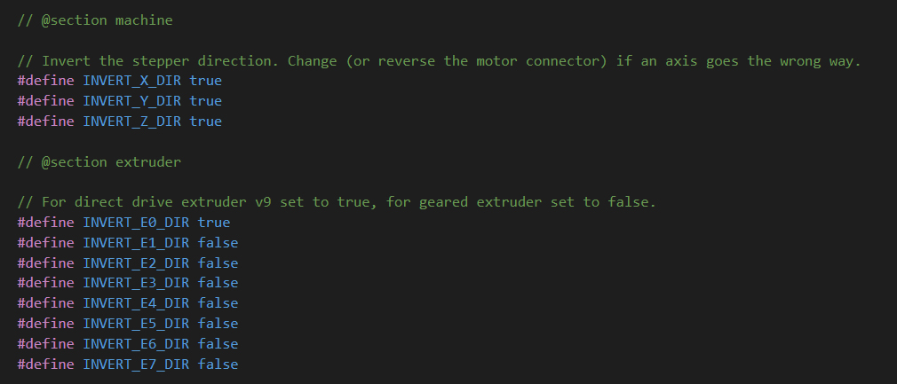Simply toggle the value from true to false or vice versa for any axes that are reversed. Recompile and flash the changes.
Reversal through wiring changes
If you don't have access to the firmware source, there is the option of altering the wiring. The simplest solution is to just plug in the stepper motor in reverse, however much to the time the connectors will make this difficult. Rather than using a blade to modify the connector and mangle it, a better solution is to lift the plastic connector housing off the mainboard PCB and then replace it facing the other way. This is illustrated in the picture below, where the E stepper port has been reversed:
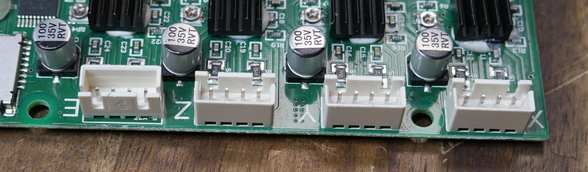Stepper motor stutters from incorrect wiring
Sometimes you may complete an upgrade of stepper motors to another brand which has different wiring. If connected without remedy the stepper motor will stutter back and forth rather than turning smoothly in either direction. In these cases, the most common fix is to remove the centre two pins from the connector and swap them. This can be fiddly but is doable with a pick or tiny screwdriver.
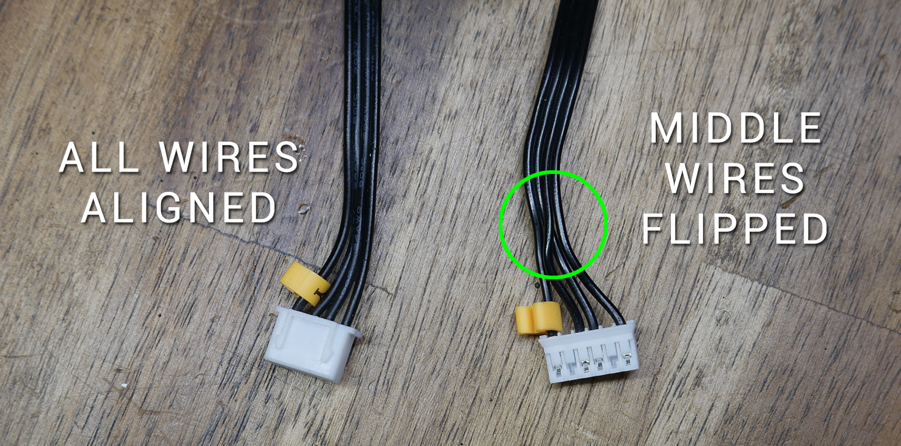If your stepper motor current was set far too low, the same stutters could occur. Proceed with caution in either switching wires or increasing the current.
Endstops/Filament Runout/Probes
Correctly configuring endstops, filament runout sensors and probes to trigger correctly can be very frustrating unless we know a good sequence to follow. That is what this tab will attempt to provide. Endstops, filament runout sensors and probes are grouped together here because the operation of each is tested with the M119 gcode.
M119 is simple but powerful. It reports back the status of the end stops filament runout sensor(s) and probes.
Note: These procedures only apply to endstop switches that can be manually triggered. A mechanical microswitch, optical switch or magnetic switch all fit into this category. It will not work for sensorless homing or when using a BLtouch for Z homing instead of an endstop.
Check each axis is moving in the correct direction
It is impossible to diagnose homing unless you have ensured each axis is moving in the correction direction. Follow the steps on the previous tab before attempting the procedures below.
Testing via terminal - Correct behaviour
Connect to your printer and make sure it is not in a homed position for any axis. This means none of the endstops are pressed. Send M119, to which you would expect the response to be:
SENDING:M119 Reporting endstop status x_min: open y_min: open z_min: open
Now we will manually move the X axis to depress the endstop, or alternatively hold down the endstop switch with our finger, and send M119 again. We would expect the output to be:
SENDING:M119 Reporting endstop status x_min: TRIGGERED y_min: open z_min: open
Repeating for each axis should show TRIGGERED for that axis as you press the endstop. This is the normal behaviour and your machine should home correctly as the endstops are setup correctly.
Axes swapped/incorrect
Let's say we press the X axis endstop but the Y reports as triggered. In this case we know that the endstops are plugged into the wrong port on the mainboard and the fix is a simple case of switching the plugs.
Endstops report in reverse
If the endstops report TRIGGERED when not pressed, and then open when pressed, you need to invert your endstop logic in the firmware. In configuration.h, search for X_MIN to be taken to the section below, where you can toggle between true/false for any axis working in reverse.
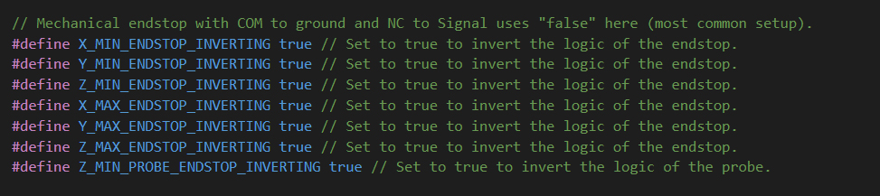In the case that the firmware source is not available, you can change which pins are connected on the microswitch. The common pin will always be connected, so you can change whether NO (normally open) or NC (normally closed) is the other pin connected to back to the mainboard.
Endstop status never changes - always reports open or TRIGGERED
This can be caused by several things. The first is that the endstop is not plugged in or plugged into the wrong port (eg. max port instead of min. If all of the axes work except for one, this is likely your culprit.
After double checking connections, and we find there is still no response from pressing any of the switches with M119, we have an option in the firmware to toggle between pull down and pull up resistors to prevent a floating state. In configuration.h, search for ENDSTOPPULLUPS to be taken to the section below, where you can comment out ENDSTOPPULLUPS and uncomment ENDSTOPPULLDOWNS. In this area, we have three options: using endstoppullups (default), endstoppulldowns (possible), or neither (very unlikely).
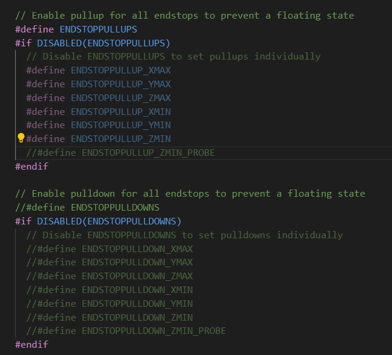If all of the endstops now come to life, you still may need to tweak the logic as described above. If there is still no response, perhaps you are using powered endstops and they are wired incorrectly.
One switch still not responding - Testing for broken wiring
If the procedures above do not produce working endstops, we need to consider that a switch or the wiring is damaged. This is particularly relevant if only one endstop is not working as intended.
A quick way to identify that wiring or a faulty switch is the issue is to remove the endstop plug from the mainboard and use a jumper to short the signal and ground pins, simulating a closed switch.
Warning: If your mainboard endstop ports have pins for 5V, ground and signal, take extra care to avoid connecting 5V to signal or ground. This will likely kill your mainboard! Consult the wiring diagram for your mainboard to avoid disaster.
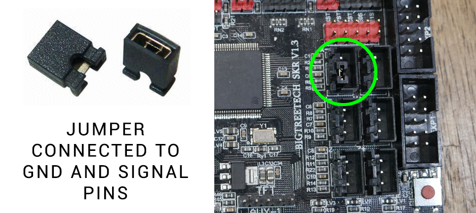If the jumper out/in provides correct M119 reporting then we know for sure we have an electrical problem with wiring or the switch.
Using a multimeter to test continuity
A multimeter is required and we will use the continuity feature. In this case the multimeter will indicate when the two probes are connected by the screen (and a buzz if your multimeter supports this). The image below shows the typical symbol for continuity, and how the screen display changes when the probes are touching or not touching. The exact value doesn't matter when the probes are touching, all we care about is that the display registers something to indicate we have continuity.
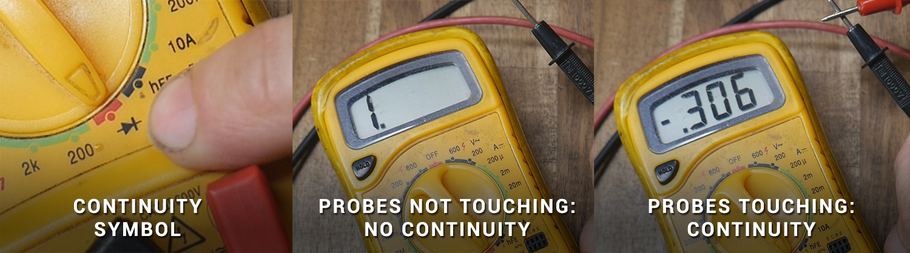Now we can use the multimeter to first test the actual switch. Connecting the probes to the microwitch terminals, We would expect continuity to change when the switch is pressed or not pressed. If it does, the switch is good. If not, the switch needs replacing. The image below shows the switch to be good. It doesn't matter if it reads continuity when it is pressed or open, as the endstop logic can be adjusted in the firmware.

Assuming the switch is good, we can now probe each wire between the switch and the mainboard to check for breaks. Connect the multimeter probes to each end of the wire, and hopefully the continuity should be measured. If one or more of the wires do not, there is an internal break and the wire(s) need to be replaced. The image below shows the red wire to be good but the black wire to be broken. If there is no continuity measured with the multimeter then there is no chance the signal can be transmitted correctly from the switch to the mainboard.
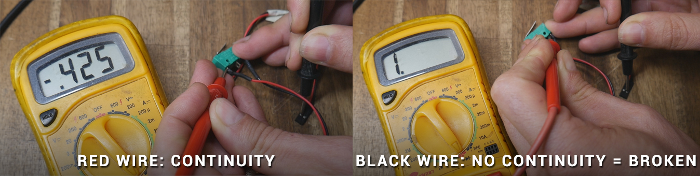Applying this testing to filament runout sensors
Most filament runout sensors are simple microswitches in a fancy housing, the same switches used for endstops. M119 also report filament runout status. If you start a print and find that the machine immediately tries to start a filament swap despite filament being loaded, you can use M119 to diagnose. With filament runout enabled in the firmware, the M119 output should read:
SENDING:M119 Reporting endstop status x_min: open y_min: open z_min: open filament: TRIGGERED
If you manually add or remove filament from the sensor, you would expect the report to change from open to TRIGGERED accordingly.
For an encoder based runout sensor (eg. BTT smart filament runout sensor), we need to repeatedly pull the filament through around 1mm at a time, sending M119 and read the status. We would expect M119 to report open most of the time and then TRIGGERED on occasion.
Like the endstops, we can change the logic and whether pullup or pulldown resistors are used in configuration.h of the firmware:
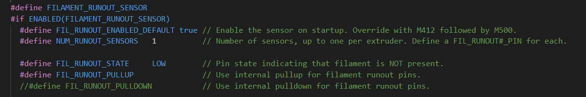We can also use a multimeter to test the wiring the same as for endstops.
Applying this testing to Z probes
With ABL enabled in the firmware, M119 will also report probe status:
SENDING:M119 Reporting endstop status x_min: open y_min: open z_min: open z_probe: open
We can use the above methods to troubleshoot the probe triggering. This works well for probes like the EZabl from TH3D or Prusa PINDA probe. You can expect the M119 status for the probe to change when you add or remove an object beneath the probe. Please remember that some probes only detect metal objects!
You may have noticed that the probe can have its logic reversed and pullup or pulldown resistors toggled at the same place as the endstops:
Note: The testing of a BLtouch is slightly different to other probes. It is covered in its own tab.
BLtouch / ABL Probes
The bulk of this page will deal with specific testing of a BLtouch, but the later sections concerning probing accuracy apply to any ABL probe.
When it's working well, a BLtouch adds great functionality to a 3D printer. It adds the convenience of the allowing the bed to be not quite be levelled perfectly. More importantly, it can compensate for a warped bed that no amount of manual levelling can fix. The reference page for the BLtouch we will be using can be found on the Antclabs website.
If your BLtouch is not working as intended, this tab maybe able to help you.
Understanding the differences between a BLtouch and other probes
The BLtouch is unique in that it has actively moving parts. Other probes replace a microswitch for the z axis and function the same way: they are either trigger or not depending on if they sense the bed directly beneath the probe. A BLtouch must be deployed (pin extended) before it can be triggered and report back to the firmware. Whereas other probes only report back to the firmware with one way communication whether they are triggered or not, a BLtouch requires two way communication. The firmware has to be able to send instructions to it, as well as receive a trigger signal back from it. This is why it has extra wiring and special gcodes that can be sent to control it.
BLtouch wiring
A BLtouch requires 5 wires. Three are used to control it (red, yellow and brown), and the remaing two are used to read the trigger signal from it (black and white). Sometimes extension looms use different colours, such as the Creality loom which substitutes blue for brown.
Pay attention to wiring diagrams! The following diagram was created for a video guide for the Creality V4 32 bit mainoards. The comments are littered with people who assumed the Creality extension loom would match the Creality board, connected the BLtouch incorrectly and blew up their mainboard. Never assume the extension loom you are using matches the input to the mainboard (even if they are both Creality).
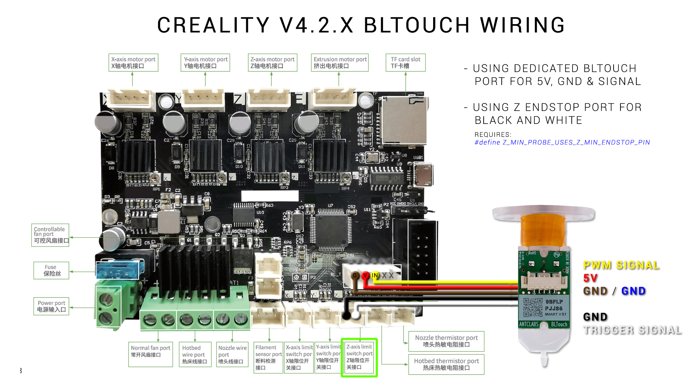Here is a break down of the pins:
- Red: 5V power to BLtouch. (Some mainboards supply 3.3V and the BLtouch can be configured to operate with this logic level).
- Brown: Ground to BLtouch. In conjuction with the red wire provides power.
- Yellow: Control signal from firmware to BLtouch. Uses pulse width modulation (PWM) to control the BLtouch, the same way as a servo is controlled with PWM.
- White: Trigger signal from BLtouch to mainboard.
- Black: Ground for trigger signal from BLtouch to the mainboard.
For the BLtouch to be work correctly, all of these wires must be connected correctly. When the printer is powered on, the BLtouch will click out and in. Only the red and brown wires are required for this behaviour. Don't assume you wiring is correct just because of this sequence when the printer is turned on.
Manual control of a BLtouch
Once again, connecting via terminal will provide more control to establish if the BLtouch is working correctly. The following gcode sequence of commands is useful for troubleshooting.
If the BLtouch does a self test (probe pin down then up twice) on start up, it means the red and brown wires are connected correctly, and the BLtouch is receiving power.
Using a terminal, send M280 P0 S120 for an extended self test. This will deploy and retract the probe pin 10 times. It can be stopped prematurely by sending M280 P0 S160.
If the firmware returns an error message that it doesn't know the command, you probably have not configured your firmware for the BLtouch correctly.
If these commands send but the BLtouch does not react, it means the yellow wire is not connected correctly. This could be a physical wiring issue or the wrong pin specified in the firmware. Remember that if specifying a custom control pin for the BLtouch, the pin must be capable of supporting PWM.
Note that a faint blue LED will be lit inside the BLtouch at all times. A bright red LED will be lit only when the probe is stowed. Therefore, when the probe is deployed, the red LED will turn off. The red LED is bright to the point that you might not notice the blue LED.
Once we have manual control of the probe pin, we can test the black and white wires to see if the BLtouch is reporting back to the firmware when it is triggered.
With the printer turned on and sitting idle (BLtouch pin retracted), sending M119 should return:
z_probe: TRIGGERED
If we now manually deploy the probe pin by sending M280 P0 S10 and then issuing M119 again, the status should read:
z_probe: open
If we now manually stow the probe pin with M280 P0 S160, and again send M119, it should return:
z_probe: TRIGGERED
If the trigger status does not change, the first thing to try is to reverse the black and white wires into the mainboard. Also note that is possible to connect the black and white wires to the Z min endstop port or a another port of your choosing, but this must be configured in the firmware. You'll notice in the wiring diagram above, the port for the black and white wires is shown and the matching line in the firmware is referenced to suit.
According to the Marlin M119 documentation, a BLtouch is in an error state if it reports TRIGGERED to the terminal. However my BLtouch installation works as described above and has been working perfectly for years now without error, so perhaps this varies from mainboard to mainboard. An additional BLtouch testing method is shown on the Pins Debugging / Direct Pin Control tab if the sequence above does not work for you.
BLtouch physical mounting
It should go without saying that everything should be rigidly mounted. BLtouch kits come with small springs but I have never used them without issue. Check for any loose fasteners in the print head and probe mounting assembly as a first step. If there is play and the BLtouch can pivot or slide from probing point to probing point, accuracy will really suffer.
Ideally the BLtouch (or any other ABL probe) will be mounted as closely to the nozzle as possible, but not so close it fails from exposure to heat. A silicone sock over the heater block can assist here. What people often forget is that the tip of the retracted probe needs to be a certain distance from the tip of he nozzle, as illustrated in the Antclabs diagram:
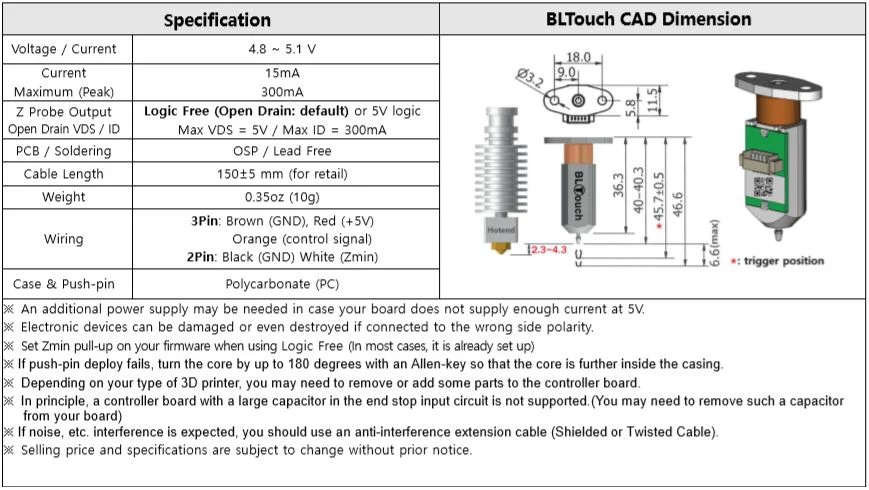If your BLtouch is mounting too far off this target of 2.3 to 4.3mm, the probing results may be inaccurate. For a guide to measuring and inputing the probe X, Y and Z offsets, see this video guide:
What to check if ABL compensation seems non existant or probing is inaccurate
Firstly, check the items previously listed on this page:
- BLtouch correctly wired and configured in firmware - passes manual control and trigger tests
- Probe is rigidly mounted - no loose fasteners
- Probe mounted the correct height relative to the nozzle
- X, Y and Z offsets correctly measured and stored in EEPROM (not just compiled into firmware)
In addition to this:
- You should have G29 (probe bed for ABL) AFTER G28 (homing) in your start gcode. By default, G28 clears any saved meshes.
- Manually levelling the bed to get it as close to flat as possible. ABL has bounds on how much it can compensate, so providing a reasonable starting point will assist the process.
- Probing when the bed is up to printing temp. Most 3D printer beds are prone to distortion when heated. Don't probe and store a mesh when it is cool, but apply that mesh when printing hot.
- Temporarily cutting power to the heated bed when probing. Some probes other than the BLtouch are affected by the current going through the heated bed elements. In this case, the bed should be brought up to temp, turned off for probing and then turned back on before printing.
- Slowing down the vertical feedrate during probing. When setting up the firmware for ABL, the vertical speed the probe travels can be set. The slower the descent towards the bed, the greater the accuracy, at the expense of overall mesh generation duration.
- Some people have good experiences with clone BLtouch probes and some people hate them. I believe they are both right. By that I mean the quality of the clone probes may be variable.
- This one comes courtesy of my patron ucirello: BLTouch wires are not shielded. Under the right circumstances the electromagnetic interference throws off the precision. One way to test for that is to run M48 with heaters off, take the number, the run M48 with heaters on (both bed and nozzle). (M48 is covered below). If they differ too much, that could be the source of the problem.
Also, if you’re willing to go to the weeds of the firmware, try changing the features that disable the extruder stepper motor. Lots of people route their BLTouch through the same path of the extruder stepper motor, and if it is powered up, it can also throw off your probe measures.
If the EMI is the source of your problems, you can use some kind of metal braided wire sleeve. - Courtesy of Chiral: "Right after the probing my hotend and bed powered down. I had to search for a while but in the end I found that Marlin has a feature called "HOTEND_IDLE_TIMEOUT" which I had activated. Unfortunately the standard value in Marlin for the deactivation is set to 5 minutes and the probing was taking long enough to trigger the timeout thus driving my printer into the cold extrusion prevention."
If all of this is checked and you still want more information on the probing results, by entering G28 and then G29 in the terminal, we can receive detailed information on the probing that takes place. The output will vary depending on whether the printer is setup with a 3x3 grid, 4x4 grid, etc. Here is a sample:
Bilinear Leveling Grid:
0 1 2
0 +0.352 +0.185 +0.265
1 +0.465 -0.007 -0.153
2 +0.915 +0.267 -0.015
Firstly, I need to manually adjust my bed of this printer to get it closer to flat. The numbers do tell another story though. For row zero and column 1, we have a classic high, low, high warped bed. The rest of the bed seems to be more of a general slant. Keep in mind the point 0,0 is likely at the front left of your bed, which may be counter intuitive.
For a more visual representation, the Bed Visualizer plugin for Octoprint will provide attractive and informative diagrams (pictured below)
There is now a fantastic web based visualiser available from Lokster. Octoprint not required! Thanks to ouartsiw for pointing this out.
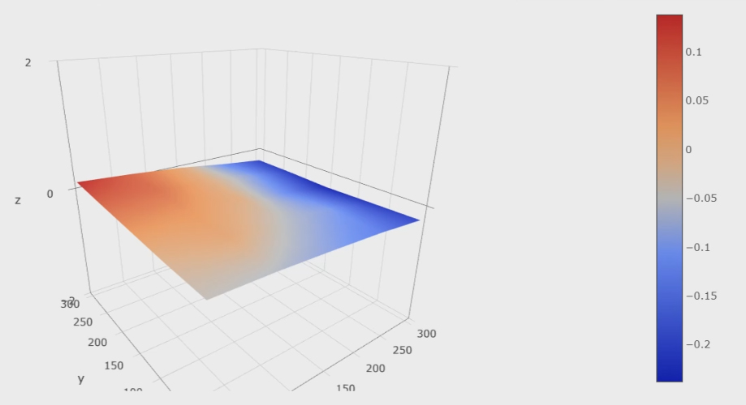Repeating either test should give you a good idea of the probe's accuracy. If the results vary wildly it may indicate an underlying problem and more targeted testing is required.
M48 Probe Repeatability test
Another option we have is to enable a purpose built probing accuracy test built into Marlin firmware. In configuration.h, search for M48 to find the section below and uncomment as shown:
Now when you send M48 via terminal (or via the LCD screen) the probe will test the same point repeatdly and return the results:
Finished! Mean: -0.006250 Min: -0.010 Max: 0.000 Range: 0.010 Standard Deviation: 0.002795
The result above is above is from a BLtouch V3.1 on an Ender 3. It is very accurate and as you might expect the ABL performance is reliable and repeatable. As the probe is moving up and down on the same spot, we would expect it to trigger at the same point each time. Further parameters can be input with M48 to customise the accuracy test, click the link above to learn more.
There is one more BLtouch test sequence that is covered in the Pin Debugging / Direct Pin Control tab.
Pin Debugging / Direct Pin Control
Marlin firmware provides very powerful low level control of your printer by enabling PINS_DEBUGGING and DIRECT_PIN_CONTROL in configuration_adv.h:
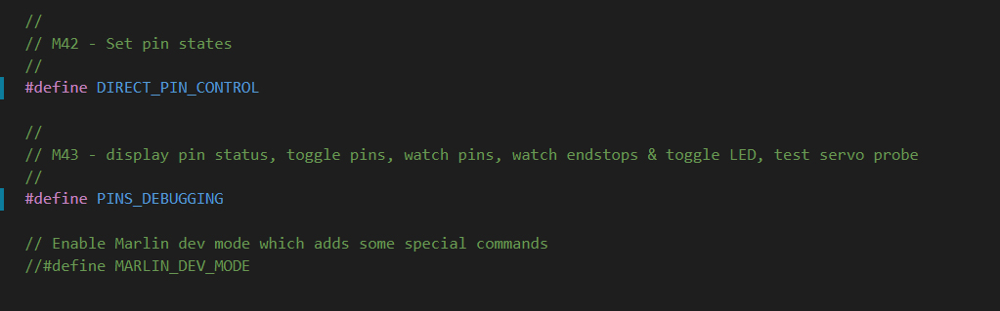As the firmware comments suggest, after recompiling the firmware and uploading we can use gcode to access this feature.
These features are intended for temporary testing only. There is the potential to damage your printer if you don't know what you're doing. Proceed with caution and disable these features after troubleshooting is complete.
M43 - Debug Pins
M43 offers a way to see exactly what the pins are doing as we have the firmware configured.
Sending M43 by itself will list all of the pins and their functions:
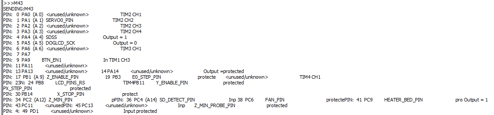As you can see, there is a lot of information and the formatting suffers as a result. There also appears to be some pins missing.
To get a slightly cleaner output, we can instead send M43 I, which will omit telling you that some pins are protected:
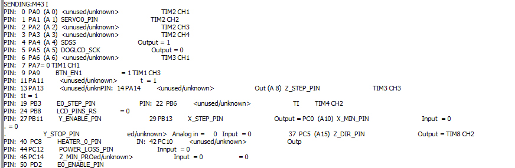If a pin is protected, that means the firmware is using it for an important function and it doesn't want you manually change the state.
Some pins are still missing, but we can still query a specific pin, by adding the P argument followed by the pin number:
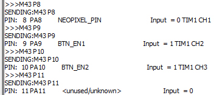We need to use the integer pin numbers (eg. 0, 1, 2, 3 ,4 , 5...) assigned by M43 rather than the specific pin numbers from the firmware (eg. P2_04).
Specific M43 Uses
M43 S will actually test the BLtouch for us, by moving the pin in and out several times and then waiting for us to manually trigger the pin.
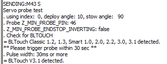M43 E1 will begin watching the endstops for activity, and M43 E0 will stop this. I found no output in the terminal from manually pressing the endstops in this state.
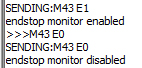M43 P[pin] W will begin watching a specific pin for activity. I couldn't find a way to exit this watching state without resetting the printer.
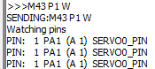M43 T - Trigger pins
M43 T offers a way to manually control pins with gcode.
Sending M43 T is a variant of M43 that allows you to cycle through your mainboard pins, pulsing them for a specific amount of time. I have not tested this personally, but the example linked on the Marlin reference page should illustrate it's use.
M42 - Set Pin State
M42 can be used to manually control mainboard pins. With the correct parameters, you can override the firmware and manually activate connected hardware. With the right gcode (which I will not include here), I managed to turn on the MOSFET for the hot end which rapidly started to raise the temperature without any target, hence the warning further up this page.
Perhaps a better use for M42 is to control hardware that is not supported by Marlin. Where some components are directly supported and have corresponding gcodes, M42 would allow you to still use gcode to trigger pins, even using PWM control.
Z Wall Artefacts
This is one of the hardest problems to diagnose and fix, since there are so many potential culprits. As such, it will receive a dedicated video at a later date.